How To Set Up A Print Style Sheet
- By Christian Krammer
- November 24th, 2011
- 38 Comments
In a time when everyone seems to have a tablet, which makes it possible to consume everything digitally, and the only real paper we use is bathroom tissue, it might seem odd to write about the long-forgotten habit of printing a Web page. Nevertheless, as odd as it might seem to visionaries and tablet manufacturers, we’re still far from the reality of a paperless world.
Related Post: Rachel Andrew’s up-to-date article1 on using Print Style Sheets.
In fact, tons of paper float out of printers worldwide every day, because not everyone has a tablet yet and a computer isn’t always in reach. Moreover, many of us feel that written text is just better consumed offline. Because I love to cook, sometimes I print recipes at home, or emails and screenshots at work, even though I do so as rarely as possible out of consideration for the environment.
Print style sheets are useful and sometimes even necessary. Some readers might want to store your information locally as a well-formatted PDF to refer to the information later on, when they don’t have an Internet connection. However, print styles are often forgotten2 in the age of responsive Web design. The good news is that a print style sheet is actually very easy to craft: you can follow a couple of simple CSS techniques to create a good experience3 for readers and show them that you’ve gone the extra mile to deliver just a slightly better user experience. So, how do we start?
Getting Started Link
Let’s look at the process of setting up a print style sheet. The best method is to start from scratch and rely on the default style sheet of the browser, which takes care of the printed output pretty well by default. In this case, insert all declarations for printing at the end of your main style sheet, and enclose them with this distinct rule:
@media print {
…
}
For this to work, we have to prepare two things:
- Include all screen styles in the separate
@media screen {…}rule; - Omit the media type for the condensed style sheet:
<link rel="stylesheet" href="css/style.css"/>
In rare cases, using screen styles for printing is the way to approach the design of the print style sheet. Although making the two outputs similar in appearance would be easier this way, the solution is not optimal because screen and print are different kettles of fish. Many elements will need to be reset or styled differently so that they look normal on a sheet of paper. But the biggest constraints are the limited page width and the need for an uncluttered, clear output. Building print styles separately from screen styles is better. This is what we will do throughout this article.
Of course, you could separate the declarations for screen and print into two CSS files. Just set the media type
for the screen output to media="screen" and the media type for printing to
media="print", omitting it for the first one if you want to build on the screen style sheet.
To illustrate, I have set up a simple�website of the fictional Smashing Winery4.
Everything needed for a proper screen display is in place. But as soon as the environment changes from virtual pixels to real paper, the only thing that matters is the actual content.
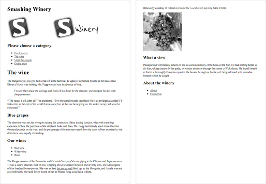
The two pages of the unaltered print preview. The header is not yet optimal, and both the main navigation and
footer are superfluous.
Therefore, as a first task, we will hide all the clutter: namely, the main navigation and footer.
header nav, footer {
display: none;
}
Depending on the type of website, you could also consider hiding images by default. If the images are big, this would be wise, to save your users some printing costs. But if the images mainly support the content, and removing them would compromise the meaning, just leave them in. Whatever you decide, limit the images to a certain width, so that they don’t bleed off the paper. I’ve found that 500 pixels is a good compromise.
img {
max-width: 500px;
}
Alternatively you could also rely on the tried and trusted max-width: 100%, which displays images at
their maximum size but not bigger than the page width.
You might want to use a simple trick to get high-quality images when printing. Just provide a higher-resolution version of every image needed and resize it to the original size with CSS. Read more about this technique in the article “High-Resolution Image Printing6” on A List Apart.
Of course, we should hide video and other interactive elements, because they are useless on paper. These include
<video>, <audio>, <object> and
<embed> elements. You might want to consider replacing each video element with an image in the
print style sheet, too.
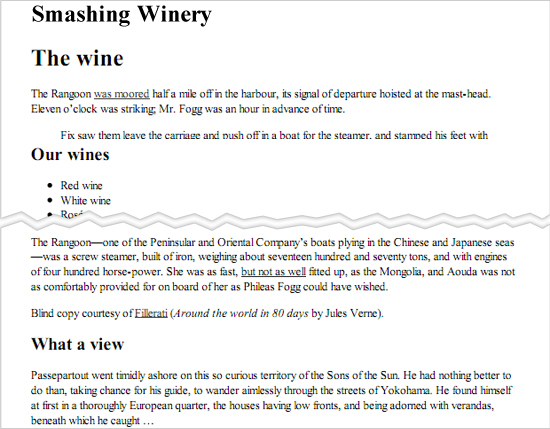
With the main navigation, footer and images gone, the actual text is getting ever closer to center stage. But
work remains to be done, especially with the header.
Adjusting To The Right Size Link
To define page margins, you can use @page rule to simply apply a margin all the way around the page.
E.g.:
@page {
margin: 0.5cm;
}
will set the page margin on all sides to 0.5cm. You can also adjust the margins for every other page. The following code sets the left page (1, 3, 5, etc.) and right page (2, 4, 6, etc.) margins independently.
@page :left {
margin: 0.5cm;
}
@page :right {
margin: 0.8cm;
}
You can also use the :first page pseudo-class that describes the styling of the first page when
printing a document:
@page :first {
margin: 1cm 2cm;
}
Unfortunately, @page is not supported in Firefox, but supported in Chrome 2.0+, IE 8.0+, Opera 6.0+
and Safari 5.0+. @page :first is supported only in IE8+ and Opera 9.2+. (thanks for the tip,
Designshack7)
Now let’s tweak some general settings for the fonts. Most browsers set the default to Times New Roman, because serif fonts are considered to be easier on the eyes when read on paper. We can use Georgia at 12-point font size and a slightly higher line height for better legibility.
body {
font: 12pt Georgia, "Times New Roman", Times, serif;
line-height: 1.3;
}
However, to retain some control, we should explicitly set the font sizes below. The chart on ReedDesign8 gives us a feel for this; but with all of the screen sizes and resolutions out there, these are only rough estimates.
h1 {
font-size: 24pt;
}
h2 {
font-size: 14pt;
margin-top: 25px;
}
aside h2 {
font-size: 18pt;
}
Apart from special cases (like the <h2> heading, which would otherwise be too close to the
preceding paragraph), we don’t need to touch the margins or appearance of any elements, because they are
handled quite nicely by the default settings. If you don’t like that certain elements are indented, such as
<blockquote>, <ul> and <figure>, you could always reset
their margins:
blockquote, ul {
margin: 0;
}
Or you could override the default bullet style in unordered lists…
ul {list-style: none}
…and replace it with a custom one; for example, a double arrow (and a blank space to give it some room):
li {
content: "» ";
}
You could also make <blockquote> stand out a bit by enlarging it and italicizing the text.
The Header Link
Currently, the remaining things to be dealt with in the header are the <h1> title and the
logo. The first is there just for accessibility9
purposes and is hidden for screen display using CSS. While we could use it as a sort of header in the print-out
to indicate the source of the content, let’s try something more attractive. Wouldn’t it be nice to display
the actual logo, instead of the boring text?
Unfortunately, the “Winery” part of the logo is white and therefore not ideal for printing on light-colored
paper. That’s why two versions of the logo are in the source code, one for screen display, one for printing.
The latter image has no alt text, otherwise screen readers would repeat reading out “Smashing
Winery.”
<a href="/" title="Home" class="logo">
<img src="img/logo.png" alt="Smashing Winery" class="screen"/>
<img src="img/logo_print.png" alt="" class="print"/>
</a>
First, we need to hide the screen logo and the <h1> heading. Depending on the relevance of the
images, we might have already decided to hide them along with other unneeded elements:
header h1, header nav, footer, img {
display: none;
}
In this case, we have to bring back the print logo. Of course, you could use the adjacent sibling selector for
the job (header img + img) to save the class name and live with it not working in Internet Explorer
6.
header .print {
display: block;
}
Otherwise, you could just use header .screen (or header :first-child) to hide the main
logo. And then the second logo would remain. Keep in mind that in print layouts, only images embedded via the
<img> tag are displayed. Background images are not.
Voilà! Now we have a nice header for our print-out that clearly shows the source of everything. Alternatively,
you could still remove the second logo from the source code and use the header’s <h1>
heading that we switched off earlier (in other words, remove it from the display: none line).
Perhaps you’ll need to hide the remaining logo as we did before. Additionally, the font size could be enlarged
so that it is clearly recognized as the title of the website.
header h1 {
font-size: 30pt;
}
As a little extra, the header in the print-out could show the URL of the website. This is done by applying the
:after pseudo-element to the <header> tag, which unfortunately won’t work in IE
prior to version 8; but because this is just a little bonus, we can live with IE’s shortcoming.
header:after {
content: "www.smashing-winery.com";
}
To see what else these pseudo-elements can do, read the description on the Mozilla Developer Network10.
Another thing about IE 6 to 8 is that HTML5 tags can’t be printed. Because we’re using these tags on the example website, we’ll have to apply Remy Sharp’s HTML5shiv11 in the header. The shiv allows you not only to style HTML5 tags but to print them as well. If you’re already using Modernizr12, that’s perfect, because the shiv is included in it.
<script src="js/html5.js"></script>
Unfortunately, the behavior of the IEs is still a bit buggy even when this shiv is applied. HTML5 tags that were styled for the screen layout need to be reset, or else the styling will be adopted for the print-out.
Some developers add a short message as a supplement (or an alternative) to the displayed URL, reminding users
where they were when they printed the page and to check back for fresh content. We can do this with the
:before pseudo-element, so that it appears before the logo. Again, this won’t work in IE 6 or 7.
header:before {
display: block;
content: "Thank you for printing our content at www.smashing-winery.com. Please check back soon for new offers on delicious wine from our winery.";
margin-bottom: 10px;
border: 1px solid #bbb;
padding: 3px 5px;
font-style: italic;
}
To distinguish it from the actual content, we’ve given it a gray border, a bit of padding and italics. Lastly, I’ve made it a block element, so that the border goes all around it, and given the logo a margin.
To make it more discreet, we could move this message to the bottom of the page and append it to main container of
the page, which has the .content class. If so, we would use the :after element and a
top margin to keep it distinct from the sidebar’s content. As far as I’m concerned, the URL is indication
enough, so I would rely on that and omit the message.
Finally, we need to remove the border of the logo to prevent it from showing in legacy browsers, and move the
<header> away from the content:
img {
border: 0;
}
header {
margin-bottom: 40px;
}
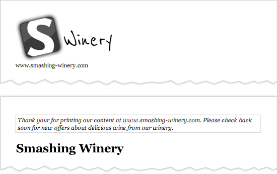
The header shown two different ways, one with a logo and simple URL, and the other with a message and the
title in plain text.
The Missing Link Link
Obviously, on paper, links aren’t clickable and so are pretty useless. You could try to build a workaround, replacing links with QR codes on the fly, but the solution may not be feasible. To put the links to use, you could display the URL after each string of anchor text. But text littered with URLs can be distracting and can impair the reading experience; and sparing the reader excessive information where possible is advisable.
The best solution is the :after pseudo-element. It displays the URL after each anchor text,
surrounded by brackets. And the font size is reduced to make it less intrusive.
p a:after {
content: " (" attr(href) ")";
font-size: 80%;
}
We’ve limited this technique to links within <p> elements as a precaution. To go a step
further, we could choose to show only the URLs of external links. An attribute selector13
is perfect for this:
p a[href^="http://"]:after {
content: " (" attr(href) ")";
font-size: 90%;
}
The possibilities for links in printed documents seem to be almost endless, so let’s try some more. To distinguish all internal links, let’s precede them with the website’s domain (omitting all the other properties, to keep things concise and clear):
p a:after {
content: " " attr(href) ")";
}
Then, we can hide internal links (#), because there is not much to display:
p a[href^="#"]:after {
display: none;
}
Also, external links will be appended as is, like above. Let’s consider SSL-secured websites, too (i.e. ones
that begin with https://):
p a[href^="http://"]:after, a[href^="https://"]:after {
content: " (" attr(href) ")";
}
But there is one thing to remember, especially with external links. Some are very long, such as the ones in the Safari Developer Library14. Such links can easily break a layout, like at the screen output. Luckily, a special property takes care of this:
p a {
word-wrap: break-word;
}
This breaks long URLs when they reach a certain limit or, as in our case, when they exceed the page’s width. Just add this property to the first of the above declarations. Although this property is basically supported in a wide range of browsers — even IE 6 — it works only in Chrome when printing. While Firefox automatically breaks long URLs, Internet Explorer has no capability for this.
Finally, we set the link color to black to improve the experience for readers.
a {
color: #000;
}
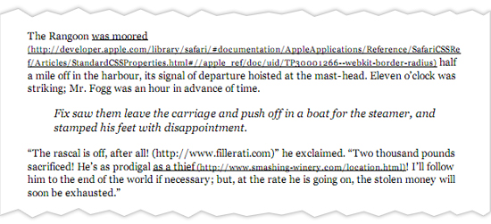
URLs, whether internal or external, now show up beside links with special treatment.
Aaron Gustafson went one step further and built the little script Footnote Links. According to the description:
This script builds a list of URIs from any tags within a specified container and appends the list as footnotes to the document in a specified location. Any referenced elements are given a dynamically-assigned number which corresponds to the link in the footnote list.
Aaron’s article on A List Apart “Improving Link Display for Print15” gives more insight into the idea behind this script.
While we’re at it, letting readers know where quotes come from, such as those wrapped in
<blockquote> and <q> tags, would be thoughtful. Just append the
cite attribute (which will be the URL) after quotation marks, like so:
q:after {
content: " (Source: " attr(cite) ")";
}
Side By Side Link
We haven’t yet dealt with the sidebar content. Even though it appears after the main content by default,
let’s give it some special treatment. To keep it distinct, we’ll give the sidebar a gray top border and a
safe buffer of 30 pixels. The last property, display: block, ensures that the border shows up
properly.
aside {
border-top: 1px solid #bbb;
margin-top: 30px;
display: block;
}
To separate it even more, we could set a special print property:
page-break-before: always;
This will move the contents of the sidebar to a new page when printed. If we do this, we can omit all of the other properties.
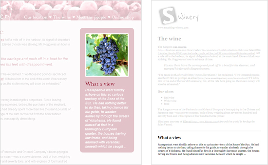
The sidebar on screen (left) and printed out (right). I’ve grayed out everything else to make it more
obvious here.
We could do the same for comments. Comments don’t appear in the example, but they’re still worth touching on.
Because they sometimes run long, omitting them in the print-out might be reasonable (just set display:
none for the whole container). If you do want to show the comments, at least set
page-break-before. You can also use page-break-after: always if there is content to
print on a new page. The page-break-before and page-break-after properties are
supported in all major browsers.
We can also use widows and orphans properties. The terms derive from traditional
printing, and they take numbers as values. The widows property sets the minimum number of lines in a
paragraph to leave at the top of a page before moving them entirely to a new page. The orphans
property sets the number of lines for the bottom of the page. The orphans and widows
properties are supported in IE 8+ and Opera 9.2+, but unfortunately not in Firefox, Safari or Chrome.
Now that we have taken care of the sidebar, the print style sheet is ready! You can download it here16. The file is fully documented and so can serve as a helpful reference or starting point.
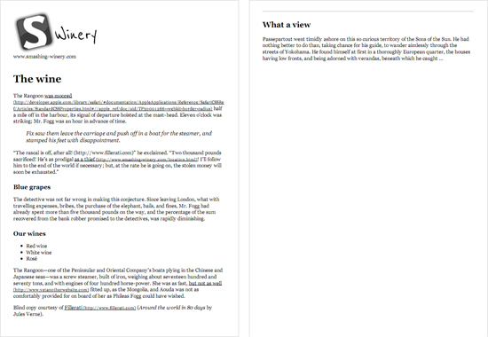
The completed print style sheet.
Just For Fun Link
You might be asking, “Why can’t we just put the sidebar next to the main content, like on the website itself?” Well, the screen and print outputs are a bit different. Unlike the former, print-outs aren’t very wide and thus don’t have much space to fill. But depending on the font size, the line length could exceed the maximum of 75 characters and so be more difficult to read17.
In this case, we could, of course, limit the width of the main content (preferably not too much — we shouldn’t set the line length to fall below about 55 characters) and then absolutely position the sidebar just below it, just like in the screen display. But describing this method falls beyond the scope of this article, so please consult the screen style sheet18 of the example website (line numbers 112 and 141 and down).
In my humble opinion, avoid such experiments. While in principle, print layouts have endless possibilities, focusing on the content and removing everything else is better. The better way to ensure an optimal line length is just to shrink the page’s width or enlarge the font size.
Preview Made Easy Link
Print Preview19 by Tim Connell is a handy little jQuery plugin that replicates the built-in print-preview function, but with one difference. Instead of opening a separate page, it shows a sleek overlay, with “Close” and “Print” buttons at the top. It also has the convenient “P” shortcut. You might want to check out the demo page20, too.
A Missed Opportunity Link
Imagine that you were able to visit any page, hit “Print” and get an optimized version of the page to enjoy on paper. Unfortunately, we don’t live in this perfect world. Some websites still rely on JavaScript to generate print versions, and many other designers simply don’t care. But this is a missed opportunity. A carefully composed print style sheet could be used not only for printing but to optimize legibility for screen reading.
As the website owner, you can determine the images to display (if any), the optimal font and size, and the presentation of other elements. You could make the content more appealing than the versions produced by Instapaper and Readability by giving the print version the extra attention it deserves.
The Future Link
While using CSS3 for screen layouts is pretty common nowadays, it hasn’t quite established itself in the print
environment yet. The W3C has an extensive description of “Paged
Media21,” but
unfortunately support is very limited at the moment, Opera and Chrome being the only browsers that enable a few
of its related properties. With decent support, it would be possible to use the @page rule to set
the dimensions of the page, switch to a landscape view, alter the margins, and do much more. Even media queries22 are were conceived
to respond to different page sizes.
Websites Designed Well For Print Link
Let’s take a look at some examples of websites optimized for print.
A List Apart23
The slick multi-column design is simplified into a single column, full width, which intuitively mirrors the
website’s sensible hierarchy. Article titles and authors are no longer active links. And beautiful clean
typography is kept intact, thanks to the compatible fonts and simple colors;�no font change is necessary,
although the font-size value increases slightly. Advertising and affiliate styles are hidden, and the result is a
simple, clean printed page that easily conforms well to any printer or page set-up in the document. A List Apart
is exemplary, save for one important point: the logo does not appear anywhere in the print-out.
Lost World’s Fairs26
The smooth printed page helps to carry the visuals of the website for Lost World’s Fairs. The main title and
its colorful background are swapped for a simplified version in the print-preview style. However, some images
could be removed to save some expensive printer ink. (Updated).

The Morning News29
One would expect most news websites to employ the print-preview function, yet that isn’t the case. The Morning
News has prepared its content for print without much concern, happily excluding background images and color,
while still getting its message across.

James Li
James Li has designed his personal website exceptionally well for this purpose, carefully preserving all spacing
and key elements. The logo is a part of the printed product, whereas the navigation links are not: very clever,
because navigation has no value on a printed page unless it is informative in and of itself. Non-Web fonts are
converted to simple printable ones (see “Other Stuff…”). Brilliantly executed for print.
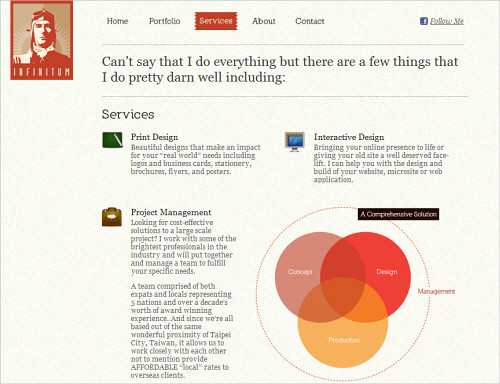
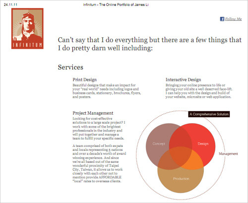
TechCrunch32
TechCrunch’s recent redesign tweaked not only the visual design of the site, but also the small details that
have to be considered when the site is viewed on mobile or printed out. The print layout is very clean and
minimalistic, without unnecessary details, yet also without links to the actual page that was printed out. The
TechCrunch logo is omitted as well.
R/GA
Although the logo isn’t present in the printed version of this website, attention is paid to the spacing of the
content within. While the Web version has simple lines and a clean space, the printed page tightens up elements
in order to best use the space. A strong grid and effective typography add to the effect. In this example, some
images could be removed as well.
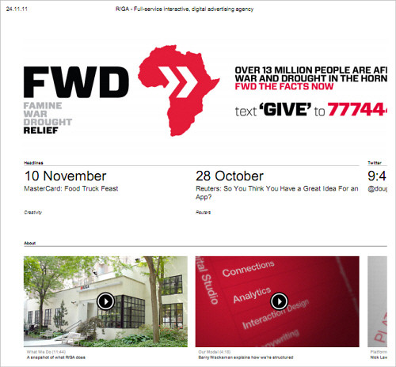
Studio Mister35
An excellent job of the print-preview function. The page has been meticulously designed to a grid and requires
little in order to prepare it for print;�some attention to the background color of text and not much else.
Unfortunately, though, the logo is a background image and thus excluded.
Bottlerocket Creative
Although this logo isn’t represented in the print-out either, the folks at Bottlerocket Creative have done very
well to adapt their typographic style for offline viewing. Assuming the design was created mainly with images
would be easy, but meticulous attention to type is evident upon closer inspection.
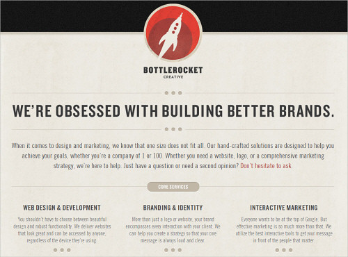
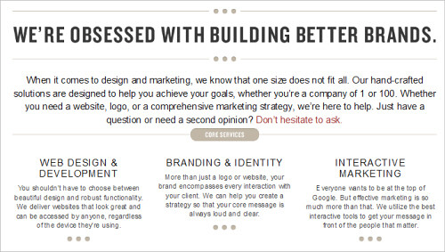
OmniTI38
OmniTI has optimized its content for print not by shrinking the main column, but by increasing the size of the
text and not crowding the images together. The playful look adheres to good spacing. The only drawback? Many of
the line breaks have been eliminated, causing some words and sentences to run into each other.
In Conclusion Link
There’s a lot to consider when preparing your website to be printed out by readers. The process forces you to scrutinize every element of your content like never before, all because someone will want a hard copy of your work. Yet most of all, it’s important to recognize the difference between printing and actually reading. Perhaps these techniques hold merit in helping you visualize content for mobile devices. What better way to kill two birds with one stone than to work out your layout for the mobile while considering printing view at the same time to make sure that your content prints flawlessly for offline archival? The time you invest could double in value.
For more information on preparing content for print, including by modifying CSS, check out the following articles:
- “Print Style Sheet: The Definitive Guide41,” Trenton Moss, Webcredible
- “6 Things I Learned About Print Stylesheets From HTML5 Boilerplate42,” Joshua Johnson, DesignShack
- “CSS Design: Going to Print43,” Eric Meyer, A List Apart
- “CSS-Tricks Finally Gets a Print Style Sheet44,” Chris Coyier, CSS-Tricks
- “CSS Print Profile45,” W3C
- “Media Queries46,” W3C
(al) (vf) (il)
Footnotes Link
- 1 https://www.smashingmagazine.com/2015/01/designing-for-print-with-css/
- 2 http://evolt.org/ResponsiveWebAndPrint
- 3 https://www.smashingmagazine.com/responsive-web-design-guidelines-tutorials/
- 4 http://www.css3files.com/smashing-winery
- 5 http://www.css3files.com/smashing-winery
- 6 http://www.alistapart.com/articles/hiresprinting/
- 7 http://designshack.net/articles/css/6-thinks-i-learned-about-print-stylesheets-from-html5-boilerplate/
- 8 http://reeddesign.co.uk/test/points-pixels.html
- 9 https://shop.smashingmagazine.com/products/pre-release-inclusive-design-patterns-by-heydon-pickering
- 10 https://developer.mozilla.org/en/CSS/Pseudo-elements
- 11 http://code.google.com/p/html5shiv/
- 12 http://modernizr.com
- 13 https://developer.mozilla.org/en/CSS/Attribute_selectors
- 14 http://developer.apple.com/library/safari/#documentation/AppleApplications/Reference/SafariCSSRef/Articles/StandardCSSProperties.html#//apple_ref/doc/uid/TP30001266--webkit-border-radius
- 15 http://www.alistapart.com/articles/improvingprint/
- 16 http://www.css3files.com/smashing-winery/css/print.css
- 17 http://baymard.com/blog/line-length-readability
- 18 http://css3files.com/smashing-winery/css/style.css
- 19 https://github.com/etimbo/jquery-print-preview-plugin
- 20 http://etimbo.github.com/jquery-print-preview-plugin/example/index.html
- 21 http://www.w3.org/TR/css3-page/
- 22 http://www.w3.org/TR/css3-page/#page-size-media-query
- 23 http://alistapart.com/
- 24 http://www.alistapart.com/articles/a-checklist-for-content-work/
- 25 http://www.alistapart.com/articles/a-checklist-for-content-work/
- 26 http://lostworldsfairs.com/
- 27 http://lostworldsfairs.com/
- 28 http://lostworldsfairs.com/
- 29 http://www.themorningnews.org/
- 30 http://www.themorningnews.org/
- 31 http://www.themorningnews.org/
- 32 http://www.techcrunch.com
- 33 http://www.techcrunch.com/
- 34 http://www.techcrunch.com/
- 35 http://www.studiomister.com/index.php
- 36 http://www.studiomister.com/index.php
- 37 http://www.studiomister.com/index.php
- 38 http://omniti.com
- 39 http://omniti.com/
- 40 http://omniti.com/
- 41 http://www.webcredible.co.uk/user-friendly-resources/css/print-stylesheet.shtml
- 42 http://designshack.net/articles/css/6-thinks-i-learned-about-print-stylesheets-from-html5-boilerplate/
- 43 http://www.alistapart.com/articles/goingtoprint/
- 44 http://css-tricks.com/css-tricks-finally-gets-a-print-stylesheet/
- 45 http://www.w3.org/TR/css-print/
- 46 http://www.w3.org/TR/css3-mediaqueries/
↑ Back to top Tweet itShare on Facebook